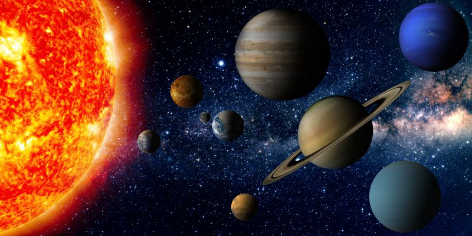
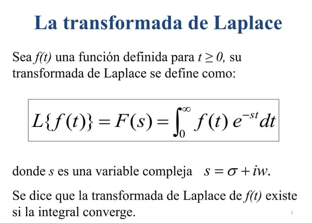

Pierre-Simon Laplace nació el 23 de marzo de 1749 en Beaumont-en-Auge, Normandía, Francia. Provenía de una familia humilde, pero gracias a su talento y dedicación logró acceder a estudios superiores. Pronto mostró un gran interés por las matemáticas. Sus habilidades llamaron la atención de profesores influyentes, quienes lo recomendaron en París, donde comenzó a relacionarse con importantes científicos como Jean le Rond d'Alembert.
Laplace fue matemático, astrónomo y físico, y es considerado una de las figuras más importantes de la ciencia del siglo XVIII y principios del XIX. Realizó aportaciones fundamentales al desarrollo de la mecánica celeste. En su obra más importante, Mécanique Céleste, explicó el movimiento de los planetas utilizando las leyes de la gravitación de Newton, demostrando matemáticamente la estabilidad del sistema solar bajo ciertas condiciones.
También hizo contribuciones esenciales en probabilidad y estadística. Su libro Théorie analytique des probabilités consolidó esta área como una disciplina matemática formal. Laplace desarrolló lo que hoy se conoce como la “transformada de Laplace”, herramienta muy importante en el análisis matemático y en la resolución de ecuaciones diferenciales, ampliamente utilizada en ingeniería y física.
Además, formuló la llamada “hipótesis nebular”, una teoría sobre el origen del sistema solar, y promovió una visión determinista del universo, conocida como el “determinismo laplaciano”, según la cual, si se conocieran todas las leyes y condiciones iniciales del universo, sería posible predecir completamente el futuro.
Durante su vida ocupó cargos importantes en Francia, incluso en la época de Napoleón, quien lo nombró conde. Más tarde recibió el título de marqués durante la Restauración.
Laplace falleció el 5 de marzo de 1827 en París, Francia. Hoy es recordado como uno de los grandes científicos que perfeccionaron y ampliaron la obra de Newton, y como una figura clave en el desarrollo de la probabilidad, la astronomía matemática y el análisis.